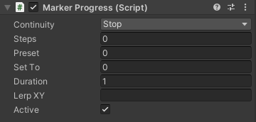

- Continuity: the continuity mode (Stop, Cycle, or Reverse) of the progress (see Tames workflow).
- Steps: this field turns the progress into a series of progress. If the value is only one number, it will be considered as the count of the progress divisions. If it contains more than one number, they are considered as the progress values of each step.
- Preset: this tell Tames that when the model is loaded in Unity, where the progress initially was at.
- Set at: this sets the progress value at the start of Play mode.
- Duration: the duration of progress in seconds. A negative duration means the progress will have the same duration/speed as its parent. A zero duration means it will exactly follow its parent progress value.
- Lerp XY: the lerping of the progress change.
- Active: element is active when the play mode begins.
|
 |